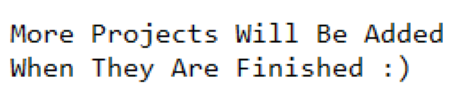

Projects
The images to the left of each project description are links to Repl.it pages where the programs, in their entirety, are hosted. The programs can be ran on the website by clicking the play button. (Except for the honors page)
Project APEX
This is the first major program that I had wrote. Apex is a basic digital assistant, with a calculator, conversation bot (WIP), small games (WIP), and more. This was written in Python and was last updated in spring of 2019. A Java port is currently in the works.
Adv. Geometry Olympic Logo

This project was made for high school advanced geometry. The original project asked for the student to draw an Olympic logo for a country they choose and to include different geometric aspects (tangents on a circle, different angles, etc.) I chose to do Japan, and asked the teacher if I could make a program to draw my logo instead of doing it by hand. This was done in Python with the Turtle library. At this point, I had not has any experience with object oriented programing. The code is messy, but I wanted to leave it in its original state.
STEM Honors Web Portfolio (The collection of web pages you are on now!)

The portfolio that is being viewed currently is one of my projects! This was a project for WEBD-101 at Franklin University during the Spring 2021 semester. This page was made from the ground level up, with HMTL, CSS, and a small bit of JavaScript and jQuery. One week at a time, the project was built upon, which was finished by the last day of class (4/17/2021). Professor Waicheong Jefferylam helped answer questions when I wanted to tweak or change aspects of the pages that moved away from the requirements. The occasional moving away from the requirements was due to the purpose of the sites creation and use. An example of this is the requirement to have one (1) CSS file, but multiple CSS files were permitted due to it fitting the purpose of the site better.
